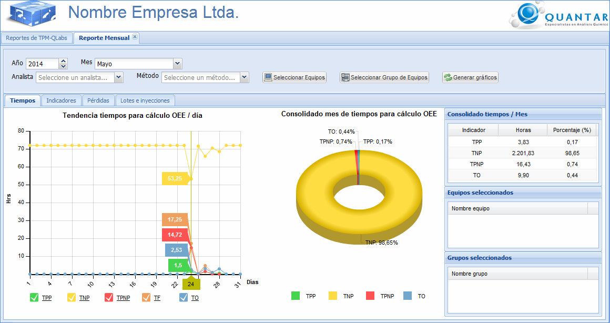
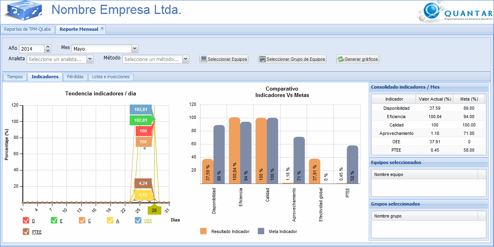
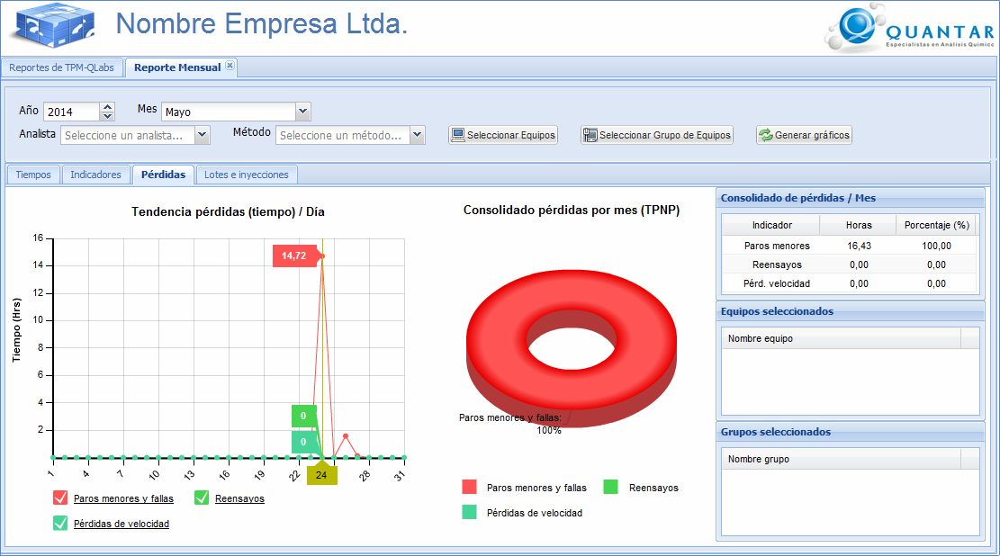
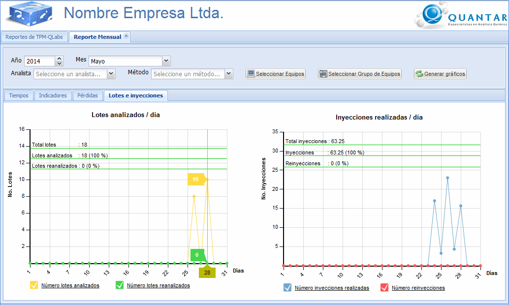

MANUAL DE USUARIO
TPM-QLabs - REPORTE MENSUAL
El reporte mensual mediante la
opción multireporte, le muestra información de tiempos, indicadores,
pérdidas y lotes e inyecciones en gráficos de torta, barras y de
dispersión para un mes especifico, tal y como se evidencia en las
Figuras 1, 2, 3 y 4.
Los gráficos inicialmente le
mostrarán la información a partir de los criterios de Año
y Mes pero es posible configurar el
reporte generado a partir de otros criterios adicionales tales como
los equipos, los grupos de equipos, el método y/o el analista
Para seleccionar los equipos, el usuario debe dar clic el botón Seleccionar Equipos y se
desplegará una interfaz con los equipos disponibles. A
continuación, el usuario debe seleccionar los equipos de su interés
y dar clic en el botón Aceptar,
tal y como se muestra en la Figura 5. Para seleccionar los
grupos de equipos, el usuario debe dar clic en el botón Seleccionar
Grupo de Equipos y se desplegará una interfaz con los
grupos de equipos registrados. El usuario debe seleccionar de
los grupos de equipos disponibles, aquellos grupos de equipos que
son de su interés y dar clic en el botón Aceptar,
tal y como se muestra en la Figura 6. Una vez
seleccionado alguno de estos criterios adicionales, debe dar clic en
el botón Generar gráficos.
Reporte mensual de tiempos

Figura 1. Pantalla de reporte
mensual de tiempos.
Reporte
mensual de indicadores

Figura 2. Pantalla de reporte mensual indicadores.
Reporte
mensual de pérdidas

Figura 3. Pantalla de reporte mensual de pérdidas.
Reporte
mensual de lotes e inyecciones
Figura 4. Pantalla reporte mensual de lotes e inyecciones detalladas por día.
Interfaz para la selección de equipos
A continuación se muestra la intefaz en la cual puede
seleccionar los equipos para configurar el reporte diario.

Interfaz para la selección de grupos de equipos
A continuación se muestra la intefaz en la cual puede seleccionar los grupos de equipos para configurar el reporte diario.

Figura 6. Pantalla para
seleccionar los grupos de equipos.